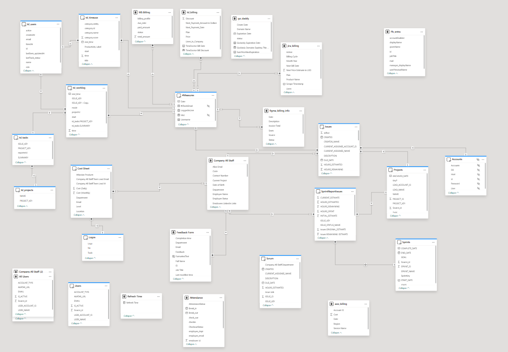
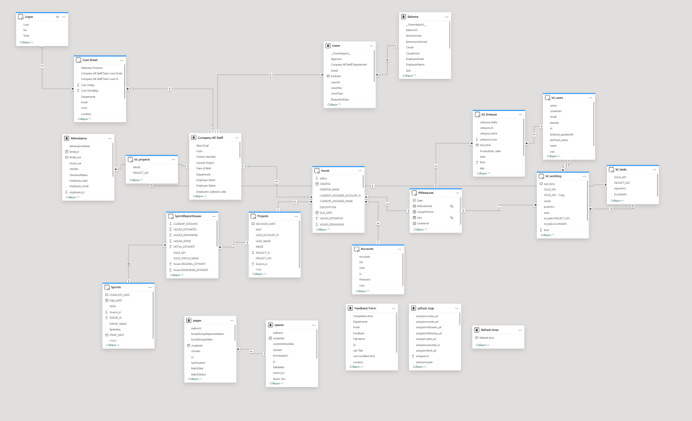

Department-Wise Analytics & Operations Dashboard
Built at Consultancy Outfit
The Problem
Every department was running on its own tools and reports. PMO lived in Jira, HR tracked attendance in spreadsheets, Finance pulled data from MongoDB, and DevOps monitored GitHub manually. Executives had no single view of what was happening across the company. Teams wasted hours every week consolidating data for status meetings — and still showed up with conflicting numbers.
The Solution
I built a unified operations platform that pulls from Jira, GitHub, Time Doctor, MongoDB, and Excel into one Power BI ecosystem. PMO sees sprint velocity and task tracking. HR sees attendance and leave patterns. Finance sees burn rates and budget health. DevOps sees code throughput and review cycles. Everyone works from the same data — and each person only sees what they're authorized to see.
My Role
I designed and built this entire platform — from stakeholder interviews and requirements gathering to data pipeline architecture, semantic modeling, dashboard design, and Row-Level Security implementation. I worked directly with department heads to understand their KPIs, then automated the data flows so they never had to chase numbers again.
Impact
Cross-department reporting replaced manual consolidation
Five data sources into one source of truth
Row-level security ensures data access control
Dashboard Demo
Watch the dashboard in action — real-time insights across all departments
Multi-Source Data Integration
Each department had its own system of record. I built Python ETL pipelines that pull from all five sources on scheduled intervals, normalize the data, and land it in a centralized warehouse. The challenge went beyond connecting APIs — it was making Jira's agile terminology align with Finance's cost centers and HR's org structure.
- Jira API — sprint metrics, story points, task assignments, epic progress
- GitHub API — commits, pull requests, review cycles, repository health
- Time Doctor API — productivity hours, project time allocation, attendance correlation
- MongoDB — operational data, custom application metrics, user activity logs
- MS Excel — legacy reports, historical benchmarks, manual adjustments
Data Modeling & Performance
With five different data sources, the risk was a slow, Frankenstein model. I designed a star schema that keeps each source's data clean and separate while allowing cross-source analysis. A manager can see how sprint velocity (Jira) correlates with time spent (Time Doctor) and project cost (Finance) — without waiting minutes for the report to load.
- Star and snowflake schema with conformed dimensions — each department shares the same date, employee, and project tables
- Incremental refresh — only new and changed data is processed, keeping refresh times under 5 minutes
- Complex DAX measures for cross-source KPIs like "cost per story point" and "utilization vs. capacity"
Row-Level Security
In a multi-department dashboard, the wrong person seeing the wrong data is a serious risk. I implemented dynamic RLS that filters data based on the user's email and org hierarchy — no manual permission management needed.
- Executives see company-wide aggregated data
- Department heads see their team's metrics plus cross-team comparisons
- Team leads see their direct reports' data only
- Individual contributors see only their own performance metrics
📊 Data Architecture
The dashboard is built on a robust data model that integrates multiple sources into a unified semantic layer. Below are the data architecture diagrams showing the relationships and structure.


Data Model Highlights
- Star schema design with fact and dimension tables for optimal query performance
- Relationships established between Jira, GitHub, Time Doctor, and HR data sources
- Calculated columns and measures for complex KPIs and cross-table analytics
- Row-Level Security (RLS) implementation for department-based data access control
What It Does
For PMO & Scrum Teams
Sprint velocity, burndown trends, task completion rates, and backlog health — all in one view. No more exporting Jira data to Excel every Monday morning.
For HR & People Ops
Attendance patterns, leave balances, and team availability — automated and always current. Replaced manual spreadsheet tracking with self-service reporting.
For Finance & Leadership
Project burn rates, budget variance, and department-level cost allocation — with drill-down from executive summary to individual project line items.
For DevOps & Engineering
GitHub commit frequency, PR velocity, review turnaround times, and code throughput — giving engineering managers visibility without interrupting developers.